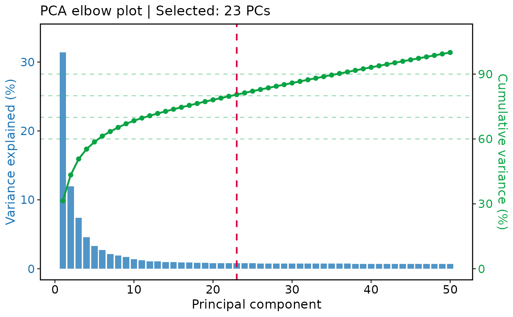

Dimension estimate diagnostic plot
Usage
DimsEstimatePlot(
object,
max_pcs = 50,
variance_thresholds = c(0.6, 0.7, 0.8, 0.9),
reduction = NULL,
palcolor = c("#D70440", "#0AA344", "#1772B4"),
aspect.ratio = NULL,
title = NULL,
subtitle = NULL,
xlab = "Principal component",
theme_use = "theme_scop",
theme_args = list(),
seed = 11,
verbose = TRUE,
srt = NULL
)Arguments
- object
A
Seuratobject with a PCA-like reduction computed.- max_pcs
Maximum number of PCs to visualize.
- variance_thresholds
Numeric vector of variance thresholds to mark.
- reduction
Reduction name to inspect. Default is
NULL, which automatically selects a PCA-like reduction viaDefaultReduction()withpattern = "pca".- palcolor
Colors for the selected-PC line, curves, and bars, respectively.
- aspect.ratio
Aspect ratio of the plot.
- title
Plot title. When
NULL(default), reports the selected number of PCs.- subtitle
Plot subtitle. Default is
NULL.- xlab
X-axis label.
- theme_use
Theme function used to style the plot.
- theme_args
Other arguments passed to the
theme_use.- seed
Random seed.
- verbose
Whether to print the message. Default is
TRUE.- srt
Deprecated alias for
object; supply exactly one of the two. It will be removed in scop 1.0.0.
Value
A ggplot object showing per-PC explained variance (bars, left
axis) and cumulative explained variance (line, right axis).
Examples
Restored example output generated on 2026-10-13 from SCOP 53ed7e08f. These historical examples have not been revalidated against the current release. Current usage and arguments are documented above.
data(pancreas_sub)
pancreas_sub <- RunStandardWorkflow(pancreas_sub)
#> ℹ [2026-10-13 16:18:51] Start standard processing workflow...
#> ℹ [2026-10-13 16:18:51] Checking a list of <Seurat>...
#> ! [2026-10-13 16:18:51] Data 1/1 of the `srt_list` is "unknown"
#> ℹ [2026-10-13 16:18:51] Perform `NormalizeData()` with `normalization.method = 'LogNormalize'` on 1/1 of `srt_list`...
#> ℹ [2026-10-13 16:18:51] Perform `FindVariableFeatures()` on 1/1 of `srt_list`...
#> ℹ [2026-10-13 16:18:51] Use the separate HVF from `srt_list`
#> ℹ [2026-10-13 16:18:51] Number of available HVF: 2000
#> ℹ [2026-10-13 16:18:51] Finished check
#> ℹ [2026-10-13 16:18:51] Perform `ScaleData()`
#> ℹ [2026-10-13 16:18:51] Perform pca linear dimension reduction
#> ℹ [2026-10-13 16:18:52] Use stored estimated dimensions 1:23 for Standardpca
#> ℹ [2026-10-13 16:18:52] Perform `Seurat::FindClusters()` with `cluster_algorithm = 'louvain'` and `cluster_resolution = 0.6`
#> ℹ [2026-10-13 16:18:52] Reorder clusters...
#> ℹ [2026-10-13 16:18:52] Skip `log1p()` because `layer = data` is not "counts"
#> ℹ [2026-10-13 16:18:52] Perform umap nonlinear dimension reduction
#> ✔ [2026-10-13 16:18:59] Standard processing workflow completed
DimsEstimatePlot(pancreas_sub)
